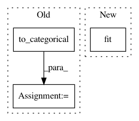

1aff940e60d7d62bd82ddf7469e666197832e212,src/classifiers/cnn_unittest.py,TestCNNModel,test_mnist,#TestCNNModel#,55
Before Change
X_train, Y_train, X_test, Y_test = X_train[:NB_TRAIN], Y_train[:NB_TRAIN], X_test[:NB_TEST], Y_test[:NB_TEST]
// convert class vectors to binary class matrices
Y_train = np_utils.to_categorical(Y_train,NB_CLASSES)
Y_test = np_utils.to_categorical(Y_test,NB_CLASSES)
im_shape = X_train[0].shape
After Change
model.compile(loss="categorical_crossentropy", optimizer="adam", metrics=["accuracy"])
// Fit the model
model.fit(X_train,Y_train,epochs=1,batch_size=BATCH_SIZE)
scores = model.evaluate(X_test,Y_test)
print("\naccuracy: %.2f%%" % (scores[1] * 100))
In pattern: SUPERPATTERN
Frequency: 3
Non-data size: 3
Instances
Project Name: IBM/adversarial-robustness-toolbox
Commit Name: 1aff940e60d7d62bd82ddf7469e666197832e212
Time: 2017-05-11
Author: valentina.zantedeschi@ibm.com
File Name: src/classifiers/cnn_unittest.py
Class Name: TestCNNModel
Method Name: test_mnist
Project Name: IBM/adversarial-robustness-toolbox
Commit Name: 1aff940e60d7d62bd82ddf7469e666197832e212
Time: 2017-05-11
Author: valentina.zantedeschi@ibm.com
File Name: src/classifiers/cnn_unittest.py
Class Name: TestCNNModel
Method Name: test_cifar
Project Name: rtavenar/tslearn
Commit Name: eb4212aff509af724c5cc011a72c5d181ae12ae4
Time: 2017-10-27
Author: romain.tavenard@univ-rennes2.fr
File Name: tslearn/shapelets.py
Class Name: ShapeletModel
Method Name: fit